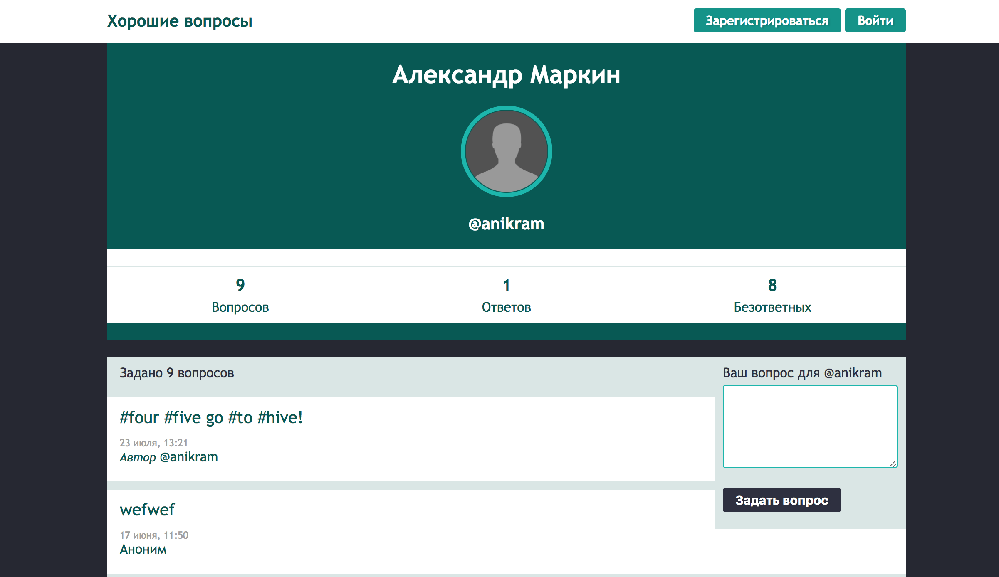
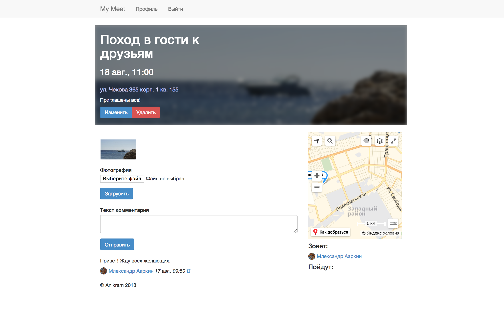
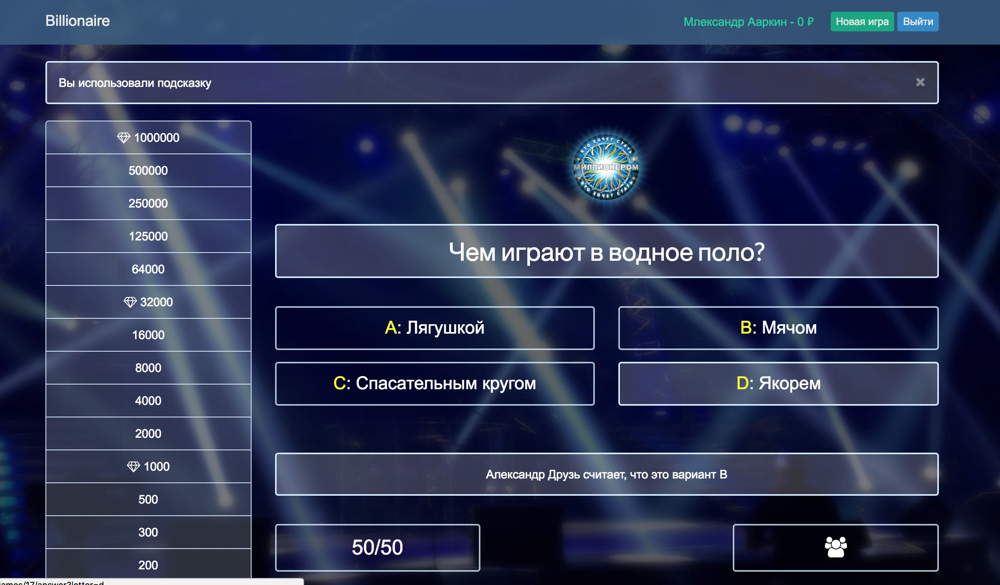
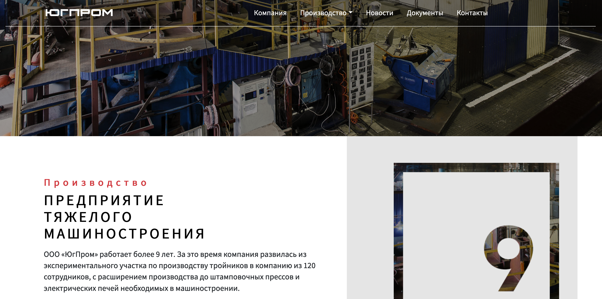

Александр Маркин
Ruby on Rails разработчик
Контактная информация
Телефон: +7 918 595 4422
г. Таганрог, Ростовская обл. 347923.
E-mail: 4nikram@gmail.com
Написать мне![[github pic]](assets/img/fb.png)
![[linkedin pic]](assets/img/lin.png)
Навыки
- Ruby, Ruby on Rails
- Gems: Device, capistrano, pandit, Carrierwave, rmagic, ActiveAdmin
- TDD, Rspec, Capybara, AWS
- Git, Github
- Английский язык Upper-intermediate.
- XML, JSON
- Use case, CRUD(L)
- HTML, CSS, Bootstrap, Skeleton
- Deploy: Heroku, VPS(nginx + passenger + postfix).
- Soft skills: Эмоциональный интеллект, планирование, общение, решение конфликтов
Сертификаты
Желаемая позиция
Full-stack, Backend, Frontend developer.
- от 50 000 ₽
- 5/2, 8 часов
- Коммандировки
- Переезд
- Удаленка
Профессиональные принципы
В работе и в жизни я за простоту, красоту и порядок. Мой принцип - делать работу качественно и в срок. Считаю, что соблюдение код стайла и применение лучших практик для решения задач - это норма. Мой код понятен мне и другим. Эффективная коммуникация (в том числе через код) залог успеха и взаимопонимания в коллективе.
Проекты
Приложение Askme
 Репозиторий проектаПриложение - соц. сеть для задавания-отвечания на вопросы (аналог сервиса ask.fm). В приложении реализованна регистрация и аутентификация пользователя (без сторонних библиотек), индивидуальная настройка внешнего вида (аватарка, цвет фон профиля), интернационализация. Приложение написано с использоватением Bootstrap 3. Встроена Invisible Captcha защита от спама. Деплой приложения выполнен на сервис Heroku.
Приложение BBQ
 Репозиторий проектаПриложение для организации встреч. Реализована работа с пользователями (gem devise), загрузка (gem carrierwave) и обработка (gem rmagick) фотографий. Так же реализованно хранение загруженного материала в облачном хранилище на AWS S3. Реализована отправка почты через приложение, с использованием ActionMailer, Sendgrid(Heroku), Postfix(VPS). Для деплоя приложения был приобретен VPS, доменное имя и настроены DNS связи для доступа по URL. Была настроена ОС ubuntu server 16.04, установлен rbenv, ruby, rails. Установлен и настроен Postgres, nginx, passenger, postfix. Был выполнен деплой на VPS ноду в ручную и при помощи gem'а capistrano. В настоящее время приложение доступно по адресу Heroku
Приложение "Кто хочет стать миллионером"
 Репозиторий проектаИгра - ремейк популярной в прошлом игры "Кто хочет стать миллионером". В работе над приложением, был подробно изучен метод разработки TDD, а так же best practices в области тестирования компонент приложения. Приложение доступно для ознакомления в репозитории Github.
Приложение Сайт ООО "ЮгПром" (коммерческий проект)
Приложение сайт-визитка компании. Реализована панель администратора, сделанная на библиотеке ActiveAdmin для добавления контента на сайт пользователями, без навыков программирования. Сайт поднят на VPS ноде AWS EC2. Поднята Стейдж версия на сервисе Heroku. Деплой происходит автоматически при помощи gem'а capistrano. На боевом сервере стоит ОС Ubuntu server 18 , настроен сервер nginx + passenger и база данных Postgres. Установлен rbenv, ruby и Rails. На Nginx настрон free SSL для создания безопасного соединения https.
Опыт разработки
Азы программирования изучал в институте ТТИ ЮФУ. Программировал на С, Pascal, ASM, Visual Fox Pro. Работал с микроконтроллерами семейства AVR и эмуляцией ПЛИС.
В рамках бесплатного курса по разработке игр в университете познакомился с разработкой игр, языком Lua и движком Love2D. Принял участие в хакатоне в команде из 5 человек в качестве программиста.
В 2018 году закончил курс по разработке на Ruby on Rails. Работал на Ruby (2.4.1-2.5.1). Написал ряд программ, среди которых Висилица (консольный вариант сторой игры с псевдографикой), Менделеев (справочник по элементам периодической таблицы), Гардероб (подбор одежды под заданную температуру). Познакомился с принципами программирования, основынми понятиями и типичными конструкциями потока программ.
В рамках курса разработал 3 Rails приложения. Работал с базами данных SQLite3 и PostgreSQL. Освоил методы тестирования моделей, вьюх и контроллеров, познакомился с концепцией TDD. Задеплоил приложения на хостинг Heroku и на свою VPS ноду. Решил задачи отправки почты, интернационализации проекта, загрузки фотографий, разграничения доступа к ресурсам, защита базы данных от взломов и инъекций, тестирования работоспособности, деплоя приложения. Особое внимание уделено культуре программирования, код стайлу, отладке приложения, работы с логами и исправлением ошибок.
Выполнил коммерческий проект сайта промышленной организации. Сайт функционирует на Rails 5.2.1. В проекте использовалась библиотека Active Admin для создания CMS (наполнение сайта и быстрое обновление данных менеджерами). Хранение файлов реализовано в AWS S3. Для деплоя использовался gem capistrano. Стейджинг версия приложения работает на Heroku, для теста новых фитч. Продакшн версия работает на VPS AWS EC2 (https://ugprom-sdt.ru).
Опыт Работы
После окончания университета я устроился на завод на должность технолога. Изготавливал документацию, рассчитывал технологические переменные. Был повышен до ведущего технолога. Занимался разработкой инструкций для специалистов производственного цеха.
Занимался описанием бизнес-процессов. Прошел обучение и изучил стандарты серии ISO 9000. Начал проводить и принимать аудиты предприятия. Вместе с коммандой разрабобтал СМК предприятия. Придерживался принципа необходимого и достаточного документооборота. Со временем меня повысили до Зам. директора по качеству.
Меня всегда привлекала динамичность ИТ сферы. В 2018 году прошел обучение и устроился на должность веб-разработчика (неполная занятость). Разработал ROR приложение сайт-визитку, с возможностью обновлять данные через панель администратора. Занимался поддержкой и обновлением сайта. Выпустил в продакшн новую версию с обновленным дизайном.
Орбазование
Оконченное высшее образование. ТТИ ЮФУ (бывш. ТРТУ) Инженер системотехник. Специальность «Промышленная электроника» 210106. 2011 год.
Эксперт-Аудитор систем менеджмента качества ООО "Центральная Экспертно-Сертификационная компания". 2014 год.
Курсы повышения квалификации по описанию бизнес процессов. Бизнес-школа SRC. 2016 год.
Курсы повышения квалияикации по бережливому производству. Учебный центр Финконт. 2017 год.
Курс по разработке на Ruby on Rails от Goodprogrammer.ru. 2018 год.
С 2012 года занимаюсь английским в языковой школе Language Link и частно. Поддерживаю уровень Upper-intermediate (подтвержденный pre-intermediate PET с отличием level B2).
Места работы
- Август 2018 - по настояшее время
Веб-разработчик - Октябрь 2012 - по настоящее время
Зам. директора по качеству - - Май 2011 - Октябрь 2012
Гл. Технолог - - Апрель 2010 - Май 2011
Технолог -